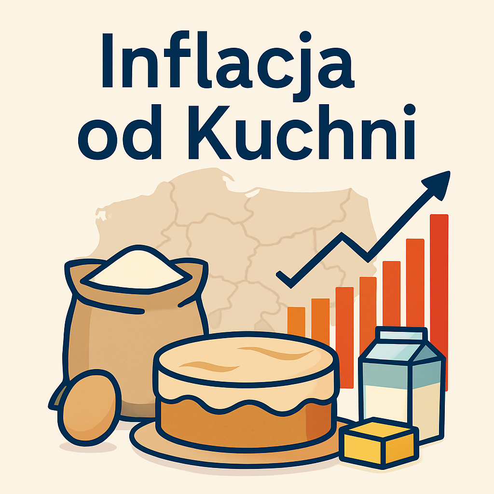

O mnie

Jestem analityczką danych z pasją do odkrywania wzorców i tworzenia przejrzystych wizualizacji.
Moje narzędzia to Python, Tableau i SQL. Ukończyłam liczne kursy, a moje projekty opierają się na analizie realnych danych gospodarczych i społecznych.
Doświadczenie
Tworzyłam analizy cen produktów spożywczych w Polsce na podstawie danych GUS. Budowałam interaktywne dashboardy w Tableau Public, rozwijałam projekty na GitHub oraz uczestniczyłam w kursach z analizy danych i data science (RapidMiner, Udemy).
Potrafię nie tylko zbierać i przetwarzać dane, ale przede wszystkim wyciągać z nich wartościowe wnioski, które wspierają podejmowanie decyzji biznesowych.
Projekty
Każdy zbiór danych skrywa historię. Zapraszam do zapoznania się z moimi projektami!
Projekt 1: Analiza wzrostu cen składników
Web Scraping + analiza danych || Python
Projekt przedstawia analizę zmian cen składników przepisu na ciasto w latach 2021-2023, porównując je z inflacją w Polsce.
Projekt 2: Regionalne zróżnicowanie inflacji
Tableau Dashboard || Tableau Public
Interaktywna wizualizacja różnic w tempie wzrostu cen w poszczególnych województwach w Polsce.
Projekt 3: Dashboard cen produktów spożywczych
Analiza wizualna || Tableau Public
Wykresy i mapy pokazujące zmiany cen podstawowych produktów spożywczych w czasie.
Projekt 4: Analiza handlu globalnego
Analiza danych portowych || Python
Badanie ruchu kontenerowców na świecie i analiza wolumenów handlu międzynarodowego.
Kontakt